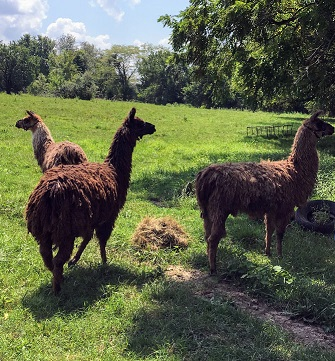
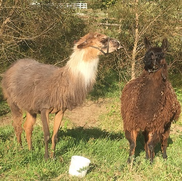

Overview
Meet Patty, Cinnnamon and Misty. Patty is the momma rougly 17 years old. Cinnamon and Misty are her babies. They have never been separated. These girls are very curious but are not used to being handled. Patty is probably the most used to the halter and behaves reasonably except when someone is trying to get her food(middle image). We utilze our Llama's for three primary purposes. They protect our herd, assist with pasture managment and their dung serves as a soil conditioner that does not burn up plants (perfect for our garden).
Intresting Llamas Facts
- origially domesticated by peoples of the Andes Mountains.
- typically used as pack animals
- range around 47 in at the shoulder,almost 6 feet tall, and 250 pounds
- capable of carrying loads of 50-75 pounds ( 20%-30% of their bodyweight for up to 20 miles
- like cows they also graze on grass
- life expectancy is 15-25 years on average
- their wool is lanolin free which is key for those alergic to lanolin